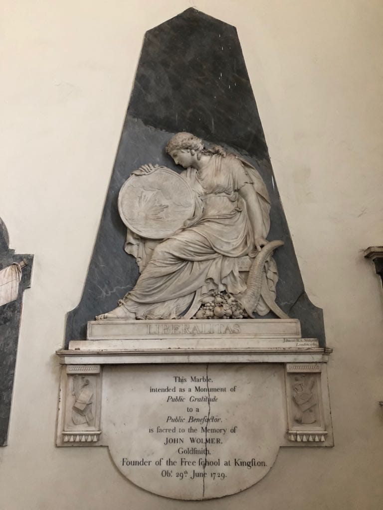
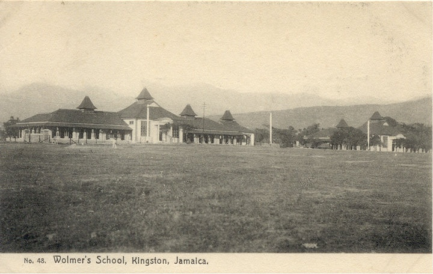
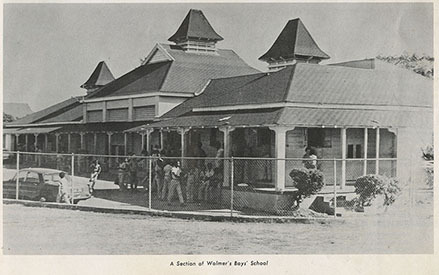
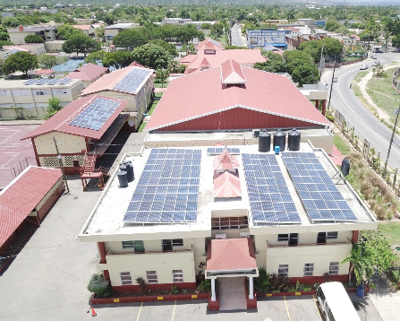

About Our School
Age Quod Agis
Welcome to Wolmer's Trust High School for Girls
Wolmer's Trust High School for Girls is one of the oldest historic educational institution located in Kingston, Jamaica. With a rich history of education and personal development, the school encourages students to strive for excellence and make significant contributions to society.
Located at 2A Marescaux Road, Kingston 5, Jamaica.
Our History
The history of Wolmer's began with John Wolmer, a Kingston goldsmith who, on May 21, 1729, left £2,360 in his will to establish a free school. The Wolmer's Trust was established through an Act in 1736 to administer the school after a series negotiations and court cases.
Boys and girls used to attend the same institution. But in 1896, the schools were separated, and the Boys' and Girls' schools were given separate administrators. This marked the beginning of Wolmer's Girls as an independent school.
Due to the 1907 earthquake, which damaged most of the school buildings, the schools had to relocate to their present area which is north of what is now known as the National Heroes Park.
Other important developments include the completion of Glasspole House in 1984, which is now a shared sixth-form facility for the Girls' and Boys' high schools.
Our Mission
The mission of the Wolmer's Schools is to build well-rounded individuals who are capable of and committed to making a meaningful contribution to society. This is supported through education, positive principals, and providing many opportunities for personal development.
Our Vision
The Wolmer's Schools aim to provide an academically stimulating environment where students and staff can experience educational, physical, social, spiritual and emotional growth.
The school's philosophy is that education develops the whole person: Mind, Body and Spirit.
Our Historical Milestones
These milestones emphasize significant events in the history and ongoing expansion of the Wolmer's Trust schools, from John Wolmer's original bequest to present-day accomplishments.

1729
John Wolmer left £2,360 in his will to establish a free school, laying the foundation for the Wolmer's educational legacy.
John Wolmer's Bequest

1896
Wolmer's Girls and Wolmer's Boys became separate schools, each with its own independent administration.
Establishment of the Separate Schools

1984
Glasspole House was completed as a shared sixth-form facility for Wolmer's Girls and Wolmer's Boys
Sixth-Form Development

2024
A solar energy system was commissioned across the three Wolmer's Trust school campuses to support electricity needs.
Solar Energy Development
Meet Our Teachers
Our teachers are dedicated to helping students reach their full potential and fostering their academic growth.
Ms. Danielle Campbell
Subject: Mathematics
Mrs. Alicia Morgan
Subject: English Language & Literature
Mr. Daniel Williams
Subject: Information Technology